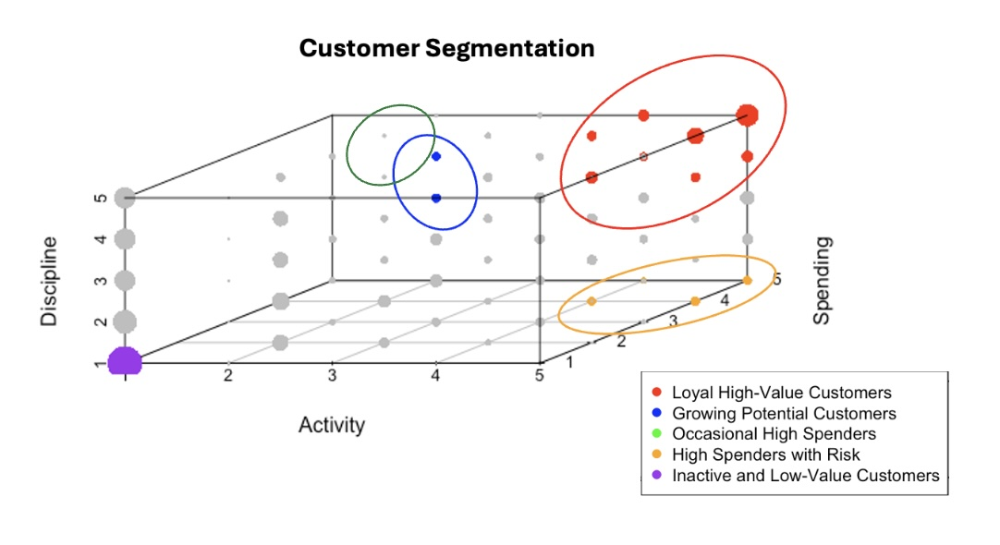

Banking on Behavior: How I Used R to Decode Customer Value
R | Customer Segmentation | RFM analysis (Recency, Frequency, Monetary)

The goal: figure out which customers bring the most value—and how to tailor rewards and retention strategies to each group.
The Business Question
The bank wanted to sharpen its loyalty rewards program. Not everyone should get premium perks—and guessing isn’t a strategy. We needed a reliable, data-driven way to:
• Rank customers by value
• Understand behavior patterns
• Target rewards that actually make sense
The Dataset: 6 Months, 8,900 Customers
We had six months of behavioral data for 8,900 active credit card holders. Each row was a customer, with variables like:
PURCHASES: total dollar amount spentPURCHASES_TRX: number of transactionsCREDIT_LIMIT: their credit capPAYMENTS: what they actually paidMINIMUM_PAYMENTS: what they had to pay
The Framework: RFM, But Customized
RFM usually stands for Recency, Frequency, Monetary. I adapted it to reflect banking behavior:
| Metric | What It Captures | Formula |
|---|---|---|
| Activity | How often they transact | PURCHASES_TRX |
| Spending | How much credit they use | PURCHASES / CREDIT_LIMIT |
| Discipline | How responsibly they pay | PAYMENTS / MINIMUM_PAYMENTS |
The Segments: Who’s Who in the Portfolio
Using R, I grouped customers into clear, actionable clusters:
1. Loyal High-Value Customers
• High activity, high spending, high payment discipline
• These are your VIPs. They deserve the perks—and protect your bottom line.
2. Growing Potential Customers
• Decent activity and spending, solid discipline
• With a little nudge (targeted offers), they could move up.
3. Occasional High Spenders
• Spend big but transact rarely.
• A valuable segment for big-ticket promotions.
4. High Spenders with Risk
• Spend a lot, often—but barely meet payment minimums
• Red flag. May require credit limit reviews or intervention.

Tools & Code
Everything was done in R, including data prep, scoring, and segmentation.
These details give teams direction. It’s not just "optimize the funnel." It's "optimize Level 3 for Safari users in the US." That’s where money gets saved—or made.
-- Calculate payment discipline --
data$payment_ratio <- data$PAYMENTS / data$MINIMUM_PAYMENTS
-- Calculate spending level --
data$credit_usage <- data$PURCHASES / data$CREDIT_LIMIT
-- Score each metric --
data$activity_score <- ntile(data$PURCHASES_TRX, 5)
data$spending_score <- ntile(data$credit_usage, 5)
data$discipline_score <- ntile(data$payment_ratio, 5)
-- Combine for segmentation --
data$rfm_score <- paste(data$activity_score,
data$spending_score,
data$discipline_score, sep = "-")
💡 What This Project Taught Me
Beyond just R skills, this project pushed me to:
• Translate business needs into analytical frameworks
• Make segmentation actionable, not just academic
• Think critically about how banks balance value vs. risk
RFM is powerful—but this also reminded me of its limits. It’s a snapshot, not a story over time. For the next step, I’d bring in CLV modeling, time-series behavior, and maybe layer in demographic or credit score data.
✅ Impact
By surfacing segments with clear behavioral traits, this project made it easier for the bank to:
• Target rewards more efficiently
• Prioritize acquisition of high-discipline, high-activity users
• Flag risky profiles before they become a problemTranslate business needs into analytical frameworks